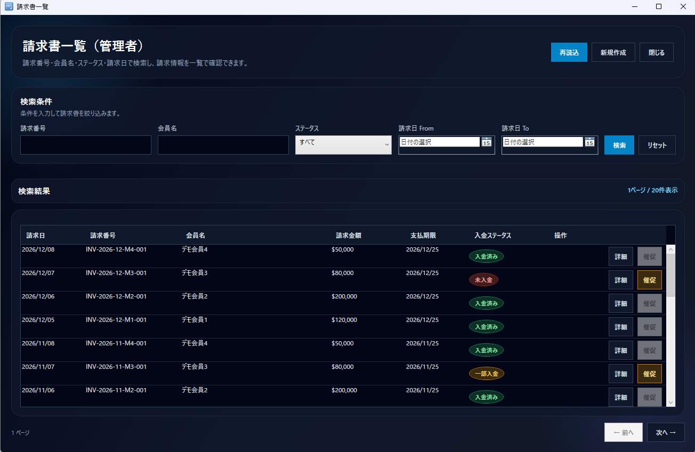

※ 動画では、デモ用データを用いて管理者画面の主要な業務フローを確認できます。
デモで確認できる内容
管理者ログイン後、請求書一覧から詳細画面を開き、請求金額・入金済み金額・残額・入金履歴を確認します。 その後、PDF出力や売上一覧など、業務管理に必要な画面を確認する流れです。
管理者ダッシュボード

請求書一覧

請求書詳細・入金状況
 ← ポートフォリオへ戻る
← ポートフォリオへ戻る
ASP.NET Core Web API と連携する C# / WPF 製デスクトップクライアントの動作デモです。 管理者向けの請求書確認、入金状況確認、PDF出力、売上確認の流れを中心に紹介します。
※ 動画では、デモ用データを用いて管理者画面の主要な業務フローを確認できます。
管理者ログイン後、請求書一覧から詳細画面を開き、請求金額・入金済み金額・残額・入金履歴を確認します。 その後、PDF出力や売上一覧など、業務管理に必要な画面を確認する流れです。

← ポートフォリオへ戻る